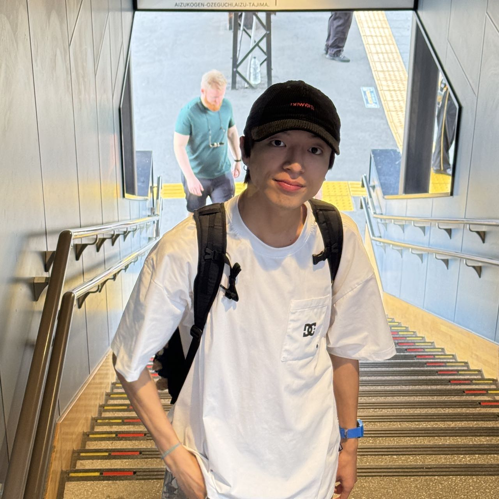

PhD candidate · Hokkaido University
Binghao WANG
World Models,
Dangers and Ethics in
Virtual Embodied AI.

Projects
News
View all news202608.21
NII-LLMC Research Assistant
I am working as a research assistant for the NII-LLMC consortium. The project name is “Construction of a Benchmark for Evaluating Multiple Hazardous Events Reflecting Diverse Human Values to Improve the Safety of LLM-jp-vl.”
202608.16
Live Show at Marquee 24
My band and I successfully performed a live show at the Marquee 24 bar in Sapporo's Kita-24 district; we played nine songs.
202606.01
D-RED researcher at Hokkaido University
I have become a D-RED researcher at Hokkaido University. （北海道大学総合イノベーション創発機構データ駆動型融合研究創発拠点研究員）
Personal Photography
China / JapanPlaces, people, and ordinary days, arranged from the newest moment to the oldest.
View collection